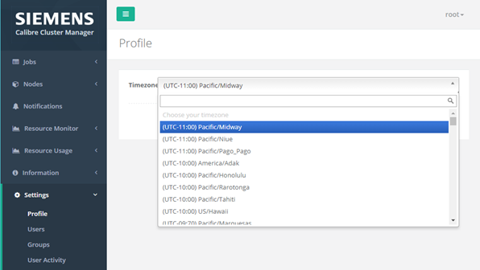
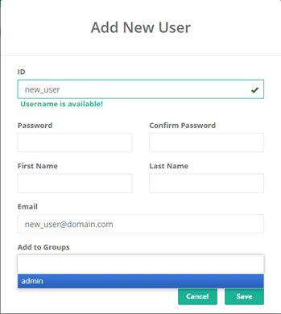
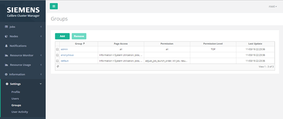
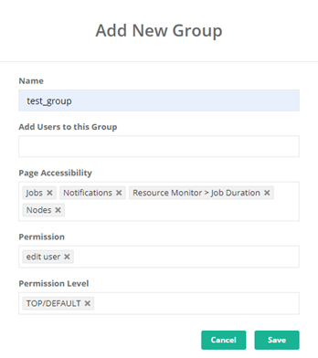
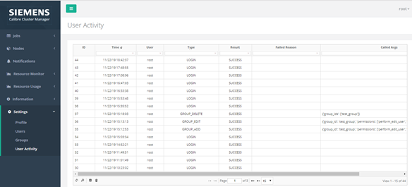

This procedure describes how you can access
and update the Settings pages in the CalCM dashboard web application.
Prerequisites
The CalCM
daemon (calcmd) and CalCM dashboard web application must be running as
described in “Starting the CalCM Daemon”.
Browser access
to the CalCM dashboard web application.
You are logged
into the CalCM dashboard web application with authentication information
that allows you access to the Settings menu
item on the left‑side of the dashboard.
Note: The CalCM dashboard displays a web login page requesting
authentication information (user name and password). Some menus
and actionable items are only accessible at certain user levels.
For more information on user authentication in the CalCM dashboard,
see the LDAP-related configuration keywords in the calcm_http_server_app.tcl application.
Procedure
- Open a
browser and enter the server name on which the CalCM daemon is running
and the dashboard server port specified in the CalCM configuration
file (calcmd.conf). For example,
DASHBOARDPORT = 9902
enter in the browser,
http://server_name:9902
- Select
the Settings menu item in the left pane of
the CalCM dashboard and set your preferred timezone by clicking Profile in
the dropdown menu.
Figure 1. Settings
Profile Timezone
- Add a new
user:
- Click Settings > Users.
- Click
the Add button and fill in the user information
fields.
If the “Add to Groups” field does not display the
correct group, you can create a group and update the user information
as described in the following step.
- Click Save.
Figure 2. Settings
Add New User
- Create
a new group and add a user:
- Click Settings > Groups to
display the user groups and information.
Figure 3. Settings
Groups
- Click
the Add button and fill in the group information
fields.
Use the dropdown menu items to control the page
accessibility and the types and levels of permissions for the new
group.
You can also click on an existing group name and
update the page access and permissions in the Edit Group window.
- Click Save.
Figure 4. Settings
Add New Group
- Click User
Activity to view a history of user actions:
Figure 5. Settings
User Activity
Results
You have accessed and updated the user and group settings in
the CalCM dashboard and viewed the record of user activities.